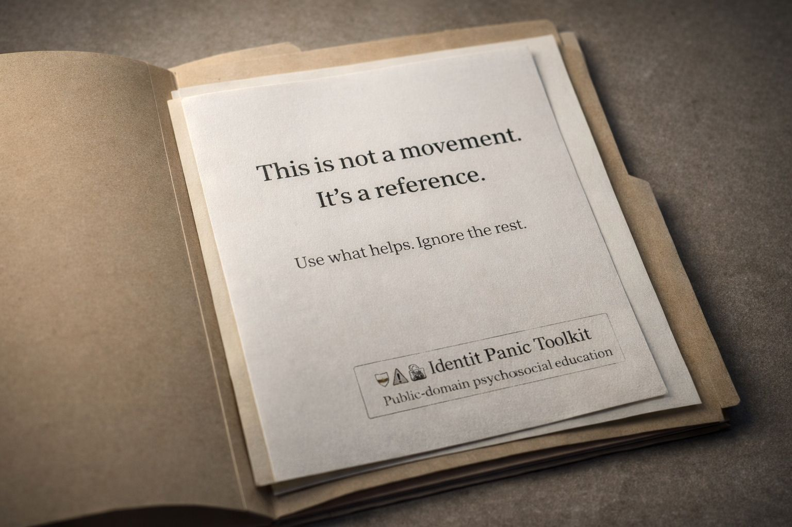

📡 Outrage Systems
HOME
MAIN LIBRARY
Outrage Consumerism
Addressing the Mob vs Mob Mentality
De-Weaponizing the Narrative: From Mob to Dialogue
De-Escalation Advisory: Strategic Calm in an Age of Triggers
De-Escalation Engine
Walk Away from the Outrage Machine
Narrative Immunity: Training the Mind Against Emotional Infiltration
False Confidence and the Roots of Hate
Why Hate Needs a Mirror
Hateful Why?
Casting, Imprinting, and the Outrage Industry
